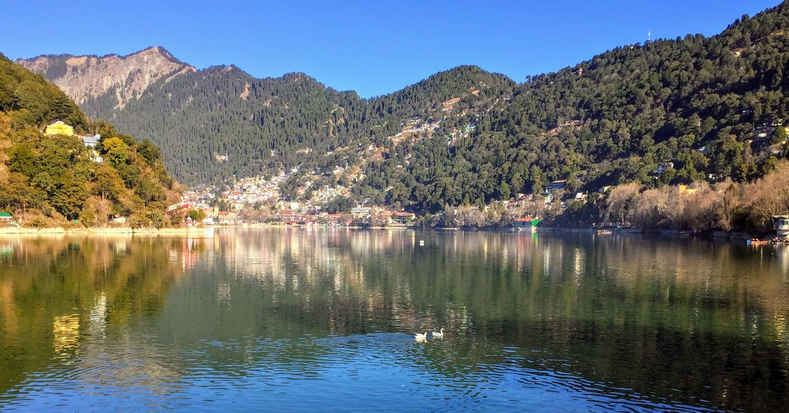
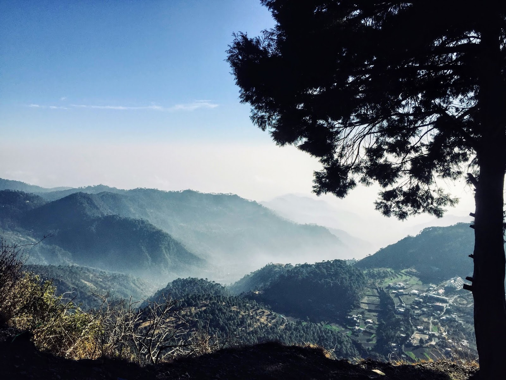

Nainital - City of Lakes
NOT EVERY LAKE DREAMS TO BE AN OCEAN. BLESSED ARE THE ONES WHO ARE HAPPY WITH WHOM THEY ARE. ~ MEHMET MURAT ILDAN
Nainital happened like an impromptu. I was in Delhi meeting few friends when the two of decided to visit Nainital the next day. Also, it was a weekend. We booked bus tickets and started next day in the evening around 9pm. We reached Kathgodam the next morning and from there we got on the shared taxis that run between Kathgodam and Nainital. It took us another hour but we were in Nainital by 8am. We had our hotel View Point Resort booked in Mallital. They arranged cabs for us to pick up from the bus stand as well, which was a good experience.

Nainital Lake
Then we checked in and took some rest. Had tasty aloo paratha and then left for sight-seeing post lunch. We had an amazing view of Himalayas from snow view point and then took the ropeway to descend to the mall road which is a famous shopping and hanging spot for all tourists. Walked a little and explored the famous market and amazing momos. The lake was amazing so we did boating and also visited the Nanda Devi temple. The day one was pretty exhausting and spent well.
The next day we decided to book a cab and see the places that were a little far like Caves, Tallital and suicide point etc.

View from Sariyatal
It was so amazing to see villages spread out around different lakes making the landscape more beautiful. After a long hour sight seeing I went for lunch and had Dosa near one of the waterfalls.
With the afternoon, I had planned to check out with luggage and then head back to Delhi. This was really a weekend spent well in the cozy lapse of mountains and lakes.